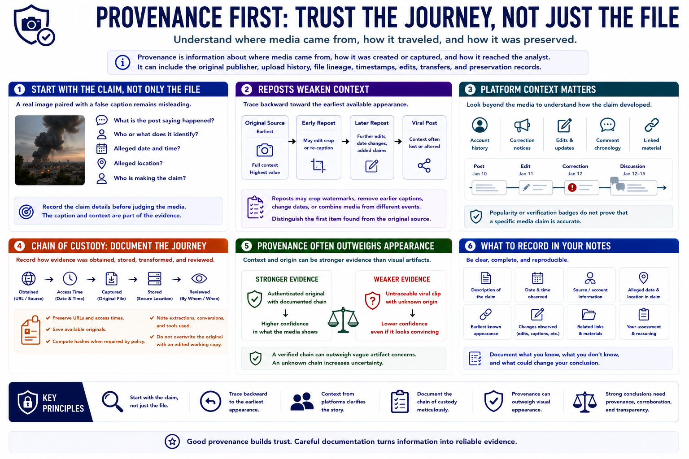

Source Context and Provenance
Connecting to LMS... Progress: in progress

Narration
Provenance is information about where media came from, how it was created or captured, and how it reached the analyst. It can include the original publisher, upload history, file lineage, timestamps, edits, transfers, and preservation records.
Start with the claim, not only the file. Record what the post says happened, who or what it identifies, the alleged date and location, and the account making the claim. A real image paired with a false caption remains misleading.
Reposts weaken context. They may crop watermarks, remove earlier captions, change dates, or combine media from different events. Trace backward toward the earliest available appearance and distinguish the first item found from the original source.
Platform context matters. Account history, correction notices, edits, comment chronology, and linked material can clarify how a claim developed. Popularity or verification badges do not prove that a specific media claim is accurate.
Chain of custody records how evidence was obtained, stored, transformed, and reviewed. Preserve URLs, access times, available originals, hashes when required by policy, and notes about extraction or conversion. Do not overwrite the original with an edited working copy.
Provenance often provides stronger evidence than appearance alone. An authenticated original recording with a documented chain may outweigh vague artifact concerns, while an untraceable viral clip remains uncertain even when it looks convincing.